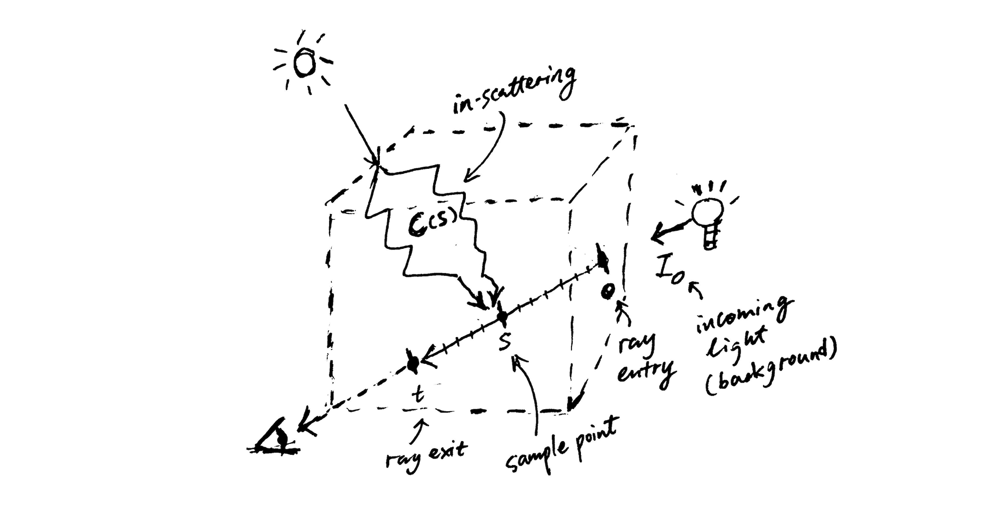
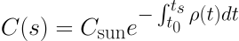
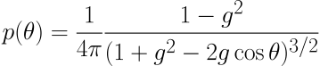

Volumetric Clouds
I ❤️ clouds. That's why I built a real-time volumetric clouds renderer with my CS1230 teammates, based on this presentation at SIGGRAPH 2015. The renderer we developed with OpenGL and C++ supports intricate cloud shapes generation, realistic lighting effects, and a physically-based sky that varies throughout the day.
I. Shape
Worley noise is a type of cellular noise where the value of each point in space is determined by its distance to the closest neighbor in a set of random feature points. It is great for modeling the density of clouds because when inverted (hover or tap on the image below to see it yourself), it tends to produce those nice bobbly patterns that resemble clouds.


Spawning Worley Noise, Fast
The first optimization we make of the above process is to take stratified samples of feature points in regular grid cells (let's call them grid points) instead of uniformly in space. This reduces the quadratic number of candidate neighbors dramatically to 27 (constant!) in 3D since we can easily find the cell any point belongs. Here is an illustration for the 2D case as they're easier to draw.

For even greater efficiency, we send all the grid points to a compute shader, which calculates a 3D noise map with hundreds of GPU cores. Long live parallelism!
Fractal Noise
To create sufficient details for our clouds, we generate two sets of 3D Worley noise: a high resolution (200x200x200) one that controls the overall shape of the clouds, and a second lower resolution (64x64x64) one that adds details to the base shape by eroding lower-density regions of the shape texture. Each texture map has 4 channels of 3-layer Worley noise of increasing frequency. This overlaying process generates fractal-like noise textures that add great details to our clouds. Below are slices of the four channels of our high resolution shape texture.


Making it Tileable
One last pitfall of our previous scheme is that textures created that way are not tileable: visible seams appear when we place two copies of a texture next to each other. Luckily, there's a simple trick to fix that: wrap the grid points around the unit cube. This makes the grid points periodic and thus makes the noise texture tileable as well.
II. Lighting
There are three key ingredients when it comes to realistic lighting for the clouds.
- Beer's Law or the exponential decay of light
- Anistropic scattering responsible for that iconic silver lining look
- Dark edges on clouds that give them a sugar-powder-like texture
Let's walk through them now.
Beer's Law
Beer's Law models the exponential decay of light energy as it propagates in an attenuating medium, like clouds. In a uniform medium, the energy of light attenutaes in a simple exponential function of the distance travelled.
For light travelling through a heterogeneous medium, we can modify the equation above slightly to acount for the varying medium density.
This type of attenuation can be found at multiple spots in the volume rendering equation. Implementing the equation in code that can run in real time, however, means that we have to make several approximations. Since a closed-form solution is clearly not feasible, we need to resort to Monte-Carlo integration instead. That means taking mutiple samples along a ray and doing discrete sums of light energy and transmittance.
The obvious headache now is the in-scattering term C. (We can ignore emssion since clouds don't shine themselves.) Evaulating it precisely involves taking an integral of all in-scattered light over all possible direction - but each beam of in-scattered light obeys the exact same formula we are trying to solve! Instead of fighting this recursive nightmare, we make the assumption that most of the in-scattered energy comes from the primary scattering path: Sun → volume → sample point. This simplifies the term to just one integral
This is now much more computationally tractable and it still gives us some resonable results.
Still under construction ('cuz Lemur just finished this project two days ago. Sorry about that! üò¢)Anistropic Scattering
Anistropic scattering sounds like a scary term. But it really just means that light prefers to scatter in some direction rather than others. In clouds, light tends to move forward instead of backward. This is what gives clouds the stunning silver lining look when the Sun shines right through them into our eyes.
Following the SIGGRAPH talk, we use the Henyey-Greenstein phase function, originally proposed in 1949 for modeling diffusion of light in galaxies, to produce the anisotropy in cloud lighting.
 Still under construction ('cuz Lemur just finished this project two days ago. Sorry about that! üò¢)